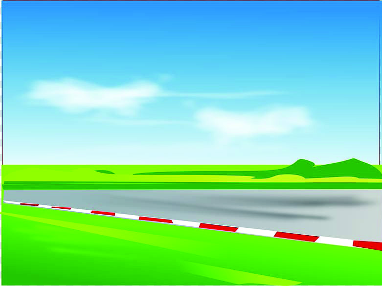
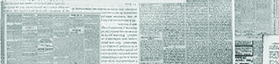
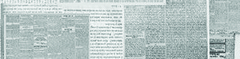
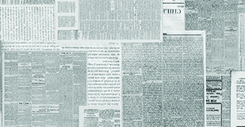
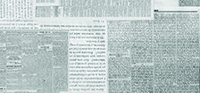
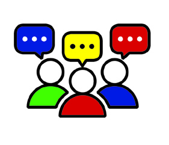

ലിംഗവിവേചനമില്ലാത്ത
സമൂഹത്തിലേ
ക്ക്
8
ബഹുമാാനപ്പെട്ട കേരള ഹൈക്്കകോടതി 2023 ആഗസ്റ്റ് 8 ന്് പുറപ്പെടുവിച്ച ഒരു നിരീക്ഷണ
ത്തെപ്പറ്ിയുള്ള വാാര്ത്തയാാണിത്്.
ഈ വാാർത്തയിിൽ നിിന്ന്് എന്തെŦല്ലാാമാാണ്് നിിങ്ങളുുടെെ ശ്രദ്ധയിിൽപ്പെെƀട്ടത്്?
ഈ വാാര്ത്തയിിൽ ഉൾക്കൊÚൊണ്ടിിട്ടുള്ള ലിംംcഗപദവി (Gender), ലിംംcഗഭേദംം (Sex) എന്നീ പദങ്ങള്
നിിങ്ങള് ഇതിനു മുമ്പ്് പരിിചയപ്പെെƀട്ടിട്ടുണ്ടോ�ോ? ഏതെ�ല്ലാംǰ ഔദ്യോ�ോ�ഗിക രേ�ഖകളിലാണ്് ഇവ സൂൂചി
പ്പിച്ചിിട്ടുള്ളത്്?
ലിംഗപദവിയും ലിംഗഭേദവും വ്യത്യസ്തമാായ
ആശയങ്ങളാാണ്്; ലിംഗപദവി തിരഞ്്ഞെടുക്കാാ
നുള്ള അവകാാശം വ്യക്ിയില് നിക്ഷിപ്തമാാണ്്.
ബഹു. കേരള ഹൈക്്കകോടതി
Page 47
Page 48
അധ്യാDZായംം 8
അധ്യാDZായംം 8
സാമൂഹ്യയശാാസ്ത്രംം I
152
വിവിധ തിരിിച്ചറിിയല് രേ�ഖകളില് ലിംംcഗപദവി, ലിംംcഗഭേദംം എന്നീ വാാക്കുകള്
മാാറിി മാാറിി ഉപയോ�ോഗിിച്ചിിരിിക്കുന്നത്് കാണാന് കഴിിയുംംc. എന്നാൽ മറ്റുു ചില
തിരിിച്ചറിിയൽ രേ�ഖകളിലുംംc അപേ�ക്ഷാാഫാാറങ്ങളിലുംംc ഇതിനുപകരമാായിി
ആൺ/പെ�ൺ/മറ്റുുള്ളവർ എന്നാണ്് പ്രയോ�ോഗിിച്ചുവരുുന്നത്്.
ലിംം�ഗഭേ�ദവുംം� ലിംം�ഗപദവിയുംം� (Sex and Gender)
പാഠത്തിന്റെെź ആദ്യയഭാഗത്ത് നല്കിിയിിരിിക്കുന്ന വാാർത്തയിിലെ� ബഹു. കേ�രള
ഹൈൈക്കോÚോടതിിയുടെെ നിിരീക്ഷണത്തി
ിൽ ലിംംcഗഭേദവുംംc (Sex) ലിംംcഗപദവിയുംംc
(Gender) വ്യയത്യയസ്തമാായ ആശയങ്ങളായാണ്് സൂൂചിപ്പിച്ചിിരിിക്കുന്നത്്.
ആണെ�ന്നുംംc പെ�ണ്ണെെĴന്നുംംc വേ�ർതിരിിക്കുന്ന ജീീവശാാസ്ത്രപരമാായ സവിിശേ�
ഷതകളെ� സൂൂചിപ്പിക്കുന്നതാാണ്് ലിംംcഗഭേദംം. ക്രോâോമസോ�ോമുുകൾ, ശരീീര
ഘടന, ഹോ�ോർമോ�ോണുുകൾ, പ്രത്യുു�ൽപാദനവ്യയവസ്ഥ മറ്റുു ശാാരീരിികഘടക
ങ്ങൾ എന്നിവയിിൽ ആണിനുംംc പെ�ണ്ണിനുമുള്ള വ്യയത്യാാ�സങ്ങളാണ്് ലിംംcഗഭേദംം
എന്ന പദംം സൂൂചിപ്പിക്കുന്നത്്.
ലിംംcഗപദവി എന്നത്് പ്രത്യേ�േക സാമൂഹിക സന്ദർഭങ്ങളിലൂടെെ പുരുഷൻ, സ്ത്രീ
എന്നീ വിഭാഗങ്ങളുുമാായിി ബന്ധപ്പെെƀട്ടിരിിക്കുന്ന സാമൂഹികവുംംc സാംംസ്കാാരിികവുംംc
മാാനസി
ികവുമാായ സവിിശേ�ഷതകളെ� സൂൂചിപ്പിക്കുന്നു. ഉദാഹരണ
മാായിി ചില
സമൂൂഹങ്ങളിൽ പിങ്ക്് നിിറംം സ്ത്രീകൾക്കുള്ള നിിറമെെന്നുംംc നീലനിിറംം പുരുഷന്മാാർ
ക്കുള്ള നിിറമെെന്നുംംc പരിിഗണിക്കുന്നു. ഇതിന് യാതൊ�ൊരു
ു ജൈൈവിിക കാരണ
ങ്ങ
ളുുമില്ല. ഇത്് കാലങ്ങളായുള്ള സാമൂഹിക സമ്പ്രദായമാായിി നിിലനിിൽക്കുന്ന
താണ്്. ഇത്തരംം മറ്റുു സന്ദർഭങ്ങൾ നിിങ്ങൾ ശ്രദ്ധിച്ചിിട്ടുണ്ടോ�ോ?
ലിംംcഗപദവി ജീീവശാാസ്ത്രപരമോ�ോ
സ്ഥിരതയോ�ോ
ഉള്ളതല്ല. സാമൂഹിക ഇടപെ�ട
ലുകളിലൂടെെ
ആർജിക്കുകയുംംc
ശക്തിിപ്പെെƀടുകയുംംc
ചെ�
യ്യുുന്നതാ
ാണ്്.
അതായത്് ലിംംcഗപദവി ഒരു സാമൂഹിക നിിർമ്മിിതിയാണ്്. ലിംംcഗപദവി എന്നത്്
ലിംംcഗഭേദത്തിനപ്പുറമുുള്ള ഒരാശയമാാണ്്. ഓരോ�ോ സമൂൂഹവുംംc പുരുഷൻ, സ്ത്രീ
എന്നീ ലിംംcഗപദവികളുുമാായിി ബന്ധപ്പെെƀട്ട ചില പ്രതീക്ഷകളും�ം പെ�രുുമാാറ്റങ്ങളും�ം
നിിർമ്മിിച്ചിിട്ടുണ്ട്. ഉദാഹരണ
മാായിി ആൺകുട്ടികൾക്ക് കളിത്തോ�ോക്കുകളും�ം
ചുവടെെെ നൽകിയിിരിിക്കുന്ന പട്ടിക പൂർത്തിയാക്കൂ...
ആധാര് കാര്ഡ്്
സ്കൂൂള് അഡ്്മിിഷന് രേ�ഖകള്
ജനനസ
ര്ട്ടിഫിക്കറ്റ്
റേ�ഷൻ കാർഡ്്
Page 49


സമൂൂഹവുംംc ലിംംcഗപദവിിയുംംc
ലിംംcഗവിിവേ�ചനമിില്ലാാത്ത സമൂൂഹത്തിിലേ�ക്ക്്
സ്റ്റാാൻഡേ�ർഡ്് IX
153
പെ�ൺകുട്ടികൾക്ക് പാവകളുുമാാണ്് അനുയോ�ോ
ജ്യയമാായ കളിപ്പാട്ടങ്ങളെ�ന്ന
ധാരണ
പൊ�ൊതുുവിൽ
നിിലനിിൽക്കുന്നതാായിി നിിരീക്ഷിക്കാംം. ഇതു
പോ�ോലെ� വ്യയക്തിികൾ സമൂൂഹത്തിൽ നിിന്ന്് ലിംംcഗ
പദവിയെ�ക്കുുറിിച്ചുള്ള
പ്രതീക്ഷകളും�ം
പെ�രുു
മാാറ്റങ്ങളും�ം
സാമൂഹീകരണത്തിലൂടെെ
ആർജി
ച്ചെ�ടുുക്കുന്നു. ഇവ വ്യയത്യയസ്ത സംംസ്കാാരങ്ങളിൽ
വ്യയത്യയസ്തരീതിയിിലായിിരിിക്കുംംc. അതോ�ോടൊ�ൊപ്പംം
ഇവയ്ക്ക്് കാലത്തിനനുുസരിിച്ച് മാാറ്റങ്ങൾ ഉണ്ടാവു
കയുംംc ചെ�യ്യുുന്നു.
ലിംംcഗഭേദമനുുസരിിച്ച് സമൂൂഹംം പ്രതീക്ഷിക്കുന്ന
ലിംംcഗപദവി ആയിിരിിക്കില്ല എല്ലാാ വ്യയക്തിികള്ക്കുംംc
ഉണ്ടാവുക. ചിലര് ലിംംcഗഭേദവുമാായിി പൊ�ൊരുുത്ത
പ്പെെƀടാത്ത ലിംംcഗപദവിയുള്ള മനുുഷ്യയര് ആയിിരിിക്കുംംc.
അത്തരത്തില് സമൂൂഹംം പ്രതീക്ഷിക്കുന്നതിിൽ
നിിന്ന്് വ്യയത്യയസ്തമാായ ലിംംcഗപദവി ഉള്ളവരാാണ്്
ട്രാാൻസ്ജെ�ൻഡർ (Transgender)വ്യയക്തിികൾ.
സാാമൂഹീകരണം (Socialisation)
ജനനംം
മുതൽ ജീീവിതകാാലംം മുഴുവനുംംc
തുടരുുന്ന ഒരു പ്രക്രിയയാാണ്് സാമൂഹീ
കരണംം. കുഞ്ഞുുങ്ങൾക്ക് അവർ ജനിി
ക്കുന്ന സമയത്ത്
് സമൂൂഹത്തെ�ക്കു
ുറിിച്ചോ�ോ
സാമൂഹികപെ�രുുമാാറ്റത്തെ�ക്കു
ുറിിച്ചോ�ോ
അറിിവുണ്ടാവുകയിില്ല. വളർച്ചയുുടെെ വിവി
ധഘട്ടങ്ങളിൽ സമൂൂഹത്തിന്റെെź ഭാഗമാായിി
മാാറുന്നതിിനായിി ആ സമൂൂഹത്തിന്റെെź
മൂല്യയങ്ങളും�ം വഴക്ക
ങ്ങളും�ം അവർ പഠിച്ചെ�
ടുക്കുന്നു. ഈ പഠിച്ചെ�ടുുക്കൽ പ്രക്രിയ
(learning process) യാണ്് സാമൂഹീകരണംം.
ട്രാാന്്സ്്ജെന്ഡർ (Transgender)
ട്രാാൻസ്ജെ�ൻഡർ വ്യയക്തിി എന്നാൽ ജനനസമയത്ത്
് ആ വ്യയക്തിിക്ക് നൽകിയിിട്ടുള്ള
ലിംംcഗപദവിയുമാായിി പൊ�ൊരുുത്തപ്പെെƀടാത്ത വ്യയക്തിി എന്നാണ്് അർഥമാാക്കുന്നത്്. ഇതിൽ
ട്രാാൻസ് പുരുഷനുംംc (Transman) ട്രാാൻസ് സ്ത്രീയുംംc (Transwoman) ഉൾപ്പെെƀടും�ം.
Clause (K) of Section 2, TPPR Act, 2019)
ലിംംcഗഭേദംം നമ്മെ�
ജീീവശാാസ്ത്രപരമാായിി ആണെ�ന്നോ�ോ പെ�ണ്ണെെĴന്നോ�ോ തരംം
തിരിിക്കുന്നു. ലിംംcഗപദവി നമ്മളിിൽ പുരുഷത്വംc (Masculinity) അല്ലെ�ങ്കിിൽ
സ്ത്രീത്വംc (Femininity) നിിർമ്മിിച്ചെ�ടുുക്കുന്നു. പുരുഷൻ, സ്ത്രീ എന്നിവരിിൽ നിിന്നുംംc
സമൂൂഹംം പ്രതീക്ഷിക്കുന്ന പെ�രുുമാാറ്റങ്ങളെ�യാാണ്് പുരുഷത്വംc, സ്ത്രീത്വംc എന്നീ
പദങ്ങൾ സൂൂചിപ്പിക്കുന്നത്്. പുരുഷൻ കരുത്തിന്റെെź പ്രതീകമാാണെ�ന്നുംംc സ്ത്രീ
വാാത്സല്യയത്തിന്റെെź പ്രതീകമാാണെ�ന്നുംംc കരുതുന്നത്് ഇതിനുദാഹരണ
മാാണ്്.
പുരുഷന്മാാർ കരയാാൻ പാടില്ലാായെ�ന്നുംംc സ്ത്രീകൾ കൂടുതൽ വൈൈകാാരിികതയുു
ള്ളവരുുമാാണെ�ന്നുംംc കരുതുന്നത്് മറ്റൊ�ൊരു
ു ഉദാഹരണ
മാാണ്്. കൂടുതൽ ഉദാഹര
ണങ്ങൾ കണ്ടെ�ത്തൂൂ.
ലിംംcഗഭേദംം ജനിിക്കുമ്പോ�ോൾ തന്നെ�
ലഭിിക്കുന്നതിിനാൽ അത്് ആരോ�ോപിിത പദവി
യാണ്്. ലിംംcഗപദവി ഒരു ആർജിതപദവിയാണ്്. അത്് നമ്മൾ ജീീവിക്കുന്ന
സംംസ്കാാരത്തിൽ നിിന്ന്് പഠിച്ച് രൂപപ്പെെƀടുത്തുന്നതാാണ്്.
Page 50


അധ്യാDZായംം 8
അധ്യാDZായംം 8
സാമൂഹ്യയശാാസ്ത്രംം I
154
ലിംംcഗഭേദത്തില് നിിന്ന്് ലിംംcഗപദവി എങ്ങനെ� വ്യയത്യാാ�സപ്പെെƀട്ടിരിിക്കുന്നു എന്ന്്
നാംം ചർച്ചചെ�
യ്തല്ലോ�ോ. ജനനത്തെ�യോ�ോ
ശരീീരത്തെ�യോ�ോ
ആശ്രയിിച്ചല്ല, മറിിച്ച്
സാമൂഹിക ഇടപെ�ടലിിലൂടെെയുംംc സാമൂഹിക വഴക്ക
ങ്ങളിലൂടെെയുംംc ഉണ്ടാകുന്ന
ശീലങ്ങളിലൂടെെയാണ്് ലിംംcഗപദവി നിിശ്ചയിിക്കപ്പെെƀടുന്നത്്.
സാമൂഹികവ്യയവസ്ഥക്കുള്ളിലെ� ഒരു വ്യയക്തിിയുടെെ സ്ഥാനമാാണ്് പദവി
(Status). സാമൂഹികവ്യയവസ്ഥക്കുള്ളിൽ വ്യയക്തിികൾ എങ്ങനെ� പരിിഗണിക്ക
പ്പെെƀടുന്നുവെ�ന്നുംംc അല്ലെ�ങ്കിിൽ നിിർവചിിക്കപ്പെെƀടുന്നുവെ�ന്നുംംc ഉള്ളതിന്റെെź നിിർ
ണ്ണായക ഘടകമാാണ്് പദവി. എല്ലാാ സമൂൂഹങ്ങളും�ം അതിനുള്ളിലെ� അംംഗങ്ങളെ�
പദവിക്കനുസരിിച്ച് വർഗീകരിിച്ചിിട്ടുണ്ട്. അതിലൂടെെ സാമൂഹികശ്രേ�ണീീകരണംം
സൃഷ്ടിിക്കപ്പെെƀടുകയുംംc ചെ�യ്യുുന്നു. അങ്ങനെ� സമൂൂഹത്തിൽ വ്യയക്തിികൾ ഉയർന്ന
പദവിയുള്ളവരെെന്നുംംc താഴ്ന്ന പദവിയുള്ളവരെെന്നുംംc നിിശ്ചയിിക്കപ്പെെƀടുന്നു.
ലിംംcഗപദവിയുംംc ലിംംcഗഭേദവുംംc തമ്മിിലുള്ള വ്യയത്യാാ�സംം ക്ലാാസിൽ ചർച്ചചെ�യ്ത്
് കുറിിപ്പ്
തയ്യാറാക്കുക.
ലിംഗഭേദം (Sex)
ലിംഗപദവി (Gender)
ജീീവശാാസ്ത്രപരമാായ സവിിശേ�ഷ
തകളെ� സൂൂചിപ്പിക്കുന്നു.
സാാമൂഹികവുംംc സാംംസ്കാാരിികവുംംc
മാാനസി
ികവുമാായ സവിിശേ�ഷത
കളെ� സൂൂചിപ്പിക്കുന്നു.
പട്ടിക വിപുലീകരിക്ൂ.
ആരോ�ോപിതപദവിയും ആർജിതപദവിയും
(Ascribed Status and Achieved Status)
ജനനത്താ
ാൽ തന്നെ�
ഒരു വ്യയക്തിിക്ക് ലഭിിക്കുന്ന സാമൂഹിക പദവിയാണ്് ആരോ�ോപിിത പദവി.
പ്രായംം, വംംശംം, ലിംംcഗഭേദംം തുടങ്ങി ഒരു വ്യയക്തിിക്ക് തിരഞ്ഞെ�ടുുക്കാനാവാാത്ത കാര്യയങ്ങൾ
ആരോ�ോപിിതപദവികൾക്ക് ഉദാഹരണ
ങ്ങളാണ്്.
വ്യയക്തിികൾ സ്വവന്തംം കഴിിവിലൂടെെയുംംc തിരഞ്ഞെ�ടുുപ്പുകളിലൂടെെയുംംc നേ�ടിിയെ�ടുുക്കുന്ന
സാമൂഹിക പദവിയാണ്് ആർജിതപദവി. വിദ്യാ�ാഭ്യാ�ാസയോ�ോഗ്യയത, വരുുമാാനംം, തൊ�ൊ
ഴിിൽ
വൈൈദഗ്ധ്യംംc തുടങ്ങിയവ ആർജിതപദവിക്കുദാഹരങ്ങളാണ്്. കാലക്രമേ�ണ
സമൂൂഹത്തിൽ
നിിന്ന്് പഠിച്ചെ�ടുുക്കുന്നവയാ
ാണിവ. ലിംംcഗപദവി സാമൂഹിക ഇടപെ�ടലുുകളിലൂടെെ പഠിച്ചെ�ടുുത്ത്
ശക്തിിപ്പെെƀടുന്നതുുകൊ�ൊണ്ടാാണ്് അതൊ�ൊരു
ു ആർജിതപദവിയാകുന്നത്്.
Page 51



സമൂൂഹവുംംc ലിംംcഗപദവിിയുംംc
ലിംംcഗവിിവേ�ചനമിില്ലാാത്ത സമൂൂഹത്തിിലേ�ക്ക്്
സ്റ്റാാൻഡേ�ർഡ്് IX
155
സാാമൂഹിക ശ്രേണീകരണം (Social Stratification)
സമൂൂഹത്തിലെ� വ്യയക്തിികളെ� തുല്യയതയിില്ലാാത്ത തരത്തിൽ വിവിധ തട്ടുകളിലായോ�ോ ശ്രേ�ണിിക
ളിലായോ�ോ സാമൂഹികമാായിി സ്ഥാനപ്പെെƀടുത്തുന്നതാാണ്് സാമൂഹിക ശ്രേ�ണീീകരണംം. ഉയർന്ന
തട്ടിലായിി സ്ഥാനപ്പെെƀടുത്തപ്പെെƀട്ടവർക്ക് സമൂൂഹത്തിൽ ഉന്നതപദവികളും�ം താഴ്ന്ന തട്ടിലായിി
സ്ഥാനപ്പെെƀടുത്തപ്പെെƀട്ടവർക്ക് സമൂൂഹത്തിൽ താഴ്ന്നതരംം
പദവിയുംംc ലഭിിക്കുന്ന രീതിയിിലാണ്്
ഇത്് പ്രവർത്തിക്കുന്നത്്. അടിമത്തവ്യയവസ്ഥ, ജാതിവ്യയവസ്ഥ തുടങ്ങിയവ സമൂൂഹത്തിൽ
നിിലനിിന്നിരുന്ന ചില സാമൂഹിക ശ്രേ�ണിികൾക്ക് ഉദാഹരണ
ങ്ങളാണ്്.
ക്ലോ�ോഡിിയ ഗോ�ോൾഡിൻ
2023ലെ� സാമ്പത്തി
ികശാാസ്ത്രത്തി
ിനുള്ള നോ�ോബൽസമ്മാനംം നേ�ടിി.
തൊ�ൊ
ഴിിൽരംംഗത്തെ� സ്ത്രീകളെ�ക്കുുറിിച്ചായിിരുന്നു പഠനംം. തൊ�ൊ
ഴിിൽ
പങ്കാളിത്തത്തിലുംംc വരുുമാാനത്തിലുമുള്ള ലിംംcഗപദവിവ്യയത്യാാ�സ
ങ്ങളുുടെെ (Gender Difference) കാരണ
ങ്ങളെ�ക്കുുറിിച്ചായിിരുന്നു
ഗവേ�ഷണംം. സാമ്പത്തി
ിക ശാാസ്ത്രത്തി
ിൽ സമ്മാനംം നേ�ടുുന്ന മൂന്നാമത്തെ�
വനിിതയാാണ്് ക്ലോ�ോഡിിയ ഗോ�ോൾഡിൻ.
ലിംം�ഗപദവിപരമാാായ പങ്കുുകൾ (Gender Roles)
“നിിനക്ക് ഭാവിയിിൽ
എന്താകാനാണ്്
ആഗ്രഹംം”?
“എനിിക്ക് കാറോ�ോട്ട മത്സരംം
വളരെെ
ഇഷ്ടമാാണ്്. ഭാവിയിിൽ
ഒരു കാർ റേ�സ
ർ ആവാാനാണ്്
എനിിക്കാഗ്രഹംം."
“അതൊ�ൊക്കെെÚ
പെ�ൺകുട്ടികൾക്ക്
പറ്റുുമോ�ോ?"
നമ്മുടെെ സമൂൂഹത്തിൽ പുരുഷന്മാാരുടെെയുംംc സ്ത്രീകളുുടെെയുംംc പദവി തുല്യയ
ശ്രേ�ണിിയിിലാണോ�ോ? വ്യയത്യാാ�സങ്ങൾ ശ്രദ്ധിച്ചിിട്ടുണ്ടോ�ോ?
Page 52
അധ്യാDZായംം 8
അധ്യാDZായംം 8
സാമൂഹ്യയശാാസ്ത്രംം I
156
മൂന്നു കൂട്ടുകാർ തമ്മിിലുള്ള സംംഭാഷണംം നിിങ്ങൾ ശ്രദ്ധിച്ചിില്ലേ�. ഈ സംംഭാ
ഷണത്തോ�ോട്് നിിങ്ങളുുടെെ പ്രതികരണമെെന്താ
ാണ്്? ചില ജോ�ോലിികൾ ചില ലിംംcഗ
പദവിയിിലുള്ളവർ മാാത്രമേ� ചെ�യ്യാാവൂ എന്ന പ്രസ്താവന നിിങ്ങൾ കേ�ട്ടി
ട്ടുണ്ടോ�ോ? വാാസ്തവത്തിൽ ജോ�ോലിികൾക്ക് ഇത്തരത്തിൽ ആൺ-പെ�ൺ ഭേദമുണ്ടോ�ോ?
ഒരു പദവിയുമാായിി ബന്ധപ്പെെƀട്ട് പ്രതീക്ഷിക്കുന്ന പെ�രുുമാാറ്റമാാണ്് പങ്ക്് (Role).
ഒരു സമൂൂഹത്തിൽ പുരുഷനുംംc സ്ത്രീയുംംc എങ്ങനെ�യൊ�ൊക്കെെ
Ú സംംസാരിിക്കണംം,
ചിന്തിക്കണംം, വസ്ത്രംം ധരിിക്കണംം, പെ�രുുമാാറണംം എന്നുംംc എന്തൊŦൊക്കെെÚ ജോ�ോലിികൾ
ചെ�യ്യണമെെന്നു
ുമുള്ള പ്രതീക്ഷകളാണ്് ലിംംcഗപദവിപരമാായ പങ്ക്് (Gender Role)
എന്ന പദംം സൂൂചിപ്പിക്കുന്നത്്. ഒരു സമൂൂഹംം പുരുഷത്വവത്തോ�ോടും�ം സ്ത്രീത്വവത്തോ�ോടും�ം
ബന്ധപ്പെെƀടുത്തുന്ന പ്രത്യേ�േക സ്വവഭാവങ്ങളും�ം മനോ�ോഭാ
ാവങ്ങളും�ം പ്രവർത്തന
ങ്ങളുുമാാണ്്
ലിംംcഗപദവിപരമാായ
പങ്ക്്
എന്നതുുകൊ�ൊണ്ടർഥമാാക്കുന്നത്്.
ഉദാഹരണത്തി
ിന് ഒരു കുടും�ംബത്തിൽ വരുുമാാനമുുണ്ടാക്കേേÚണ്ടത്് പുരുഷനുംംc
വീട്ടുജോ�ോലിികൾ ചെ�യ്യേ�ണ്ട
ത്് സ്ത്രീകളുുമാാണ്് എന്ന ധാരണ
ചില സമൂൂഹത്തിൽ
നിിലനിിൽക്കുന്നു. ഈ പങ്കുകൾ വ്യയക്തിികളുുടെെ തിരഞ്ഞെ�ടുുപ്പുകൾ പരിിമിത
പ്പെെƀടുത്തുന്നു. ലിംംcഗപദവിപരമാായ പങ്കുകളുുടെെ അടിസ്ഥാനത്തിൽ നമ്മുടെെ
സമൂൂഹത്തിൽ നിിരവധിി വഴക്ക
ങ്ങളും�ം ശീലങ്ങളും�ം പ്രകടമാാണ്്.
ലിംംcഗഭേദമനുുസരിിച്ചാണോ�ോ നിിങ്ങളുുടെെ വിദ്യാ�ാലയത്തി
ിൽ ചുമതല
കൾ നൽകു
ന്നത്്? നിിങ്ങളുുടെെ വിദ്യാ�ാലയത്തി
ിൽ താഴെെക്കൊÚൊടുത്തിരിിക്കുന്ന ചുമതല
കൾ
കൂടുതലുംംc ചെ�യ്യുുന്നത്് ആരാണ്്?
ചെ�ക്ക്്് ലിസ്റ്റ്്് പൂർത്തിയാാക്കൂ.
ചുമതലകൾ
ആൺകുട്ടികൾ
പെൺകുട്ടികൾ
സ്കൂൾ അസംംബ്ലിിയിിൽ പ്രാർഥനാ
ഗാനംം ആലപിിക്കുന്നത്്
ബഞ്ച്്, ഡസ്ക് എന്നിവ ക്രമീകരിിക്കുന്നത്്
ക്ലാാസ്റൂമിലെ� ഡിജിറ്റൽ ഉപകരണ
ങ്ങൾ ക്രമീകരിിക്കുന്നത്്
ക്ലാാസിന് പുറത്തുള്ള ആവശ്യയങ്ങൾ
ക്കായിി പോ�ോകുന്നത്്
പുരുഷനുംംc സ്ത്രീക്കുംംc പരമ്പരാാഗതമാായിി വീതംംവച്ചുകൊ�ൊടുുത്തിരിിക്കുന്ന/നിിശ്ച
യിിച്ചു നൽകിയിിരുന്ന ജോ�ോലിികള്, ഉത്തരവാാദിത്വവങ്ങള് എന്നിവ എല്ലാാവരും�ം ഒരുമിച്ച് പങ്കിട്ടു
ചെ�യ്യുുന്ന രീതിയിിലുള്ള സന്ദര്ഭങ്ങള് കോ�ോര്ത്തിണക്കി ക്ലാാസിൽ ഒരു റോ�ോൾപ്ലേേƃ
അവതരിിപ്പിക്കൂ.
ഇന്ന്് സ്കൂളുുകളിൽ ഇത്തരംം പ്രവർത്തനങ്ങൾ ആൺകുട്ടികളും�ം പെ�ൺകുട്ടികളും�ം
ഒരുമിച്ച് പങ്കിട്ട് ചെ�യ്യുുന്നതാായിി നമുുക്ക് ഇതിൽ നിിന്ന്് മനസ്സിിലാക്കാംം.
Page 53


സമൂൂഹവുംംc ലിംംcഗപദവിിയുംംc
ലിംംcഗവിിവേ�ചനമിില്ലാാത്ത സമൂൂഹത്തിിലേ�ക്ക്്
സ്റ്റാാൻഡേർഡ് IX
157
കുുടിിവെള്ളംം പാാഴാാക്കരുുത്്.
ഒരുു വ്യക്തിിയെെയുംം� ശാാരീരികമാായി ഉപദ്രവിക്കരുുത്്.
മുുതിർന്ന പൗരരെെ ബഹുുമാാനിിക്കണംം.
ഇരുുചക്ര വാഹനങ്ങളിിൽ സഞ്ചരിക്കുന്നവർ നിിർബന്ധമാായുംം� ഹെ�ൽമറ്റ്് ധരിക്കണംം.
ശാാരീരിക പ്രത്യേ�േകതകളുുടെെ പേ�രിിൽ ആരെെയുംം� മാാറ്റി നിിർത്തരുുത്്.
നിിയമാാനുസൃതമാായ തിരഞ്ഞെെĚടുപ്പുുകള്ക്ക് ഏതൊ�ൊരുു വ്യക്തിിക്കുംം� അവകാാശമുുണ്ട്്.
മുുതിർന്ന പൗരരെെ സംരക്ഷിിക്കണംം.
സ്ത്രീീധനം വാങ്ങുന്നതുംം� നൽകുുന്നതുംം� കുുറ്റകര
മാാണ്.
ലിംംcഗപദവിിയുംംc സാാമൂൂഹിികവഴക്കങ്ങളും�ം (Gender and Social norms)
ഇന്ത്യയയിൽ മുൻകാലങ്ങളിിൽ നിിലനിിന്നിരുുന്ന ‘സതി’ എന്ന
സാമൂഹിക
അനാചാരത്തെ�
സൂചിപ്പിക്കുന്ന
ചിത്രമാാണിത്്.
ഭർത്താവ് മരിിച്ചാാൽ ഭാര്യ അയാളുടെെ ചിതയിിൽ ചാടിി ജീീവൻ
വെടിിയണംം എന്ന അനാചാരമാായിരുുന്നു സതി. ഇന്ത്യയയിൽ
നിിലനിിന്നിരുുന്ന മറ്റൊ�ൊരുു സാമൂഹിക അനാചാരമാായിരുുന്നു ‘തൊ�ൊട്ടുു
കൂടായ്മ’. വ്യക്തിികളെ� വ്യത്യസ്ത ജാതിയിൽ ഉൾപ്പെ�ടുുത്തി, അതിൽ
താഴ്ന്ന ജാതിയായി കരുുതപ്പെ�ട്ടവർ, ഉയർന്ന ജാതിയായി കരുുത
പ്പെ�ട്ടവരിിൽ നിിന്ന് നിിശ്ചിിത അകലംം പാാലിച്ചു മാാത്രമേ� സമൂഹ
ത്തിൽ ഇടപെ�ടാാൻ പാാടുള്ളൂ എന്ന അനാചാരമാായിരുുന്നു തൊ�ൊട്ടുു
കൂടായ്മ. സതിയുംം� തൊ�ൊട്ടുുകൂടായ്മയുംം� പണ്ടുകാലങ്ങളിിൽ നിിയമംം
പോ�ോലെ� പാാലിച്ചിരുുന്നവയാണ്. എന്നാൽ പിന്നീട് സാമൂഹിക
പരിിഷ്്കരണ
ങ്ങളുടെെ ഭാഗമാായി നിിയമനിിർമ്മാാണത്തിലൂടെെ അവ
നിിരോ�ോധിിക്കപ്പെ�ട്ടുു.
എഴുതപ്പെ�ടാാത്തതുംം� എന്നാൽ ഒരുു സമൂഹത്തിൽ കാലാകാലങ്ങളായി നിില
നിിൽക്കുന്നതുമാായ ചില വഴക്കങ്ങൾ നമുുക്ക് ചുറ്റുമുണ്ട്്. ഇവയാണ് സാമൂ
ഹികവഴ
ക്കങ്ങൾ (Social Norms). ഒരുു പ്രത്യേ�േക സാമൂഹിക സംഘത്തിലോ�ോ
സംസ്കാാരത്തിലോ�ോ സ്വീ�കാാര്യമാായി കണക്കാക്കപ്പെ�ടുുന്ന വിശ്വാാ�സങ്ങൾ, പെ�രുുമാാ
റ്റങ്ങൾ, മനോ�ോഭാ
ാവങ്ങൾ എന്നിവയുടെെ അലിഖിിത നിിയമങ്ങളാണ് സാമൂഹിക
വഴക്കങ്ങൾ. ഒരുു വ്യക്തിിയെെ കാണുമ്പോƠോൾ അഭിവാദനം ചെ�യ്യുുന്നതുംം� നന്ദിി
പറയുന്നതുംം� ഒക്കെ� വഴക്കങ്ങളാണ്.
ചുവടെെ നൽകിയിരിക്കുന്ന പ്രസ്താവനകള് ശ്രദ്ധിിക്കൂ.
1987-ലെ� സതി നിിരോ�ോധനനിിയമത്തിിലൂടെെയാാണ് ഇന്ത്യയൻ പാാർലമെെന്റ്് സതി നിിരോ�ോ
ധിച്ചത്്. സ്വവമേ�ധയാലോ�ോ നിിർബന്ധപൂർവമോ�ോ സതി ആചരിക്കുന്നതുംം� സതി സമ്പ്രദാ
യത്തെ� അനുകൂലിച്ച് പ്രസ്താവന നടത്തുന്നതുംം� ഈ നിിയമംം നിിരോ�ോധിിക്കുന്നു.
ഭരണ
ഘടനയുുടെെ അനുച്ഛേേĄദം 17 ലൂടെെയുംം� 1955ലെ� പൗരവകാാശ സംരക്ഷണ
നിിയമ
ത്തിലൂടെെയുുമാാണ് ഇന്ത്യയയിൽ തൊ�ൊട്ടുുകൂടായ്മ എന്ന അനാചാരം നിിരോ�ോധിിക്കപ്പെ�ട്ടത്്.
Page 54


അധ്യാDZായംം 8
അധ്യാDZായംം 8
സാമൂഹ്യയശാാസ്ത്രംം I
158
ഈ പ്രസ്താവനകളെ� ‘നിിയമങ്ങള്’ എന്നുംംc ‘വഴക്ക
ങ്ങള്’ എന്നുംംc വര്ഗീകരിിച്ചു
നോ�ോക്കൂ.
ഇതുപോ�ോലുുള്ള കൂടുതൽ നിിയമങ്ങളും�ം വഴക്ക
ങ്ങളും�ം കണ്ടെ�ത്തിി പട്ടികയിിൽ
ഉൾപ്പെെƀടുത്തുക.
നിിയമപരമല്ലാാത്ത വഴക്ക
ങ്ങള് എന്തുകൊ�ൊണ്ടാാവാംം സമൂൂഹത്തില് ഇന്നുംംc
നിിലനിില്ക്കുന്നത്്? നിിങ്ങളുുടെെ അഭിപ്രായങ്ങള് പ്രവർത്തനപുുസ്തകത്തിൽ
എഴുതിച്ചേ�ർക്കുക.
ലിംഗപദവി വാാർപ്പുമാാതൃകകൾ (Gender Stereotypes)
ചുവടെെെ നൽകിയിിരിിക്കുന്ന പ്രസ്താവനകള് ശ്രദ്ധിക്കൂ.
നിയമങ്ങള്
വഴക്കങ്ങള്
ഒരു വ്യയക്തിിയെ�യുംംc ശാാരീരിികമാായിി
ഉപദ്രവിക്കരുത്്
മുുതിർന്ന പൗൗരരെെ ബഹുമാാനിിക്കണംം
എല്ലാാ സ്ത്രീകളും�ം വാാത്സല്യയ
മുള്ളവരാാണ്്.
പ്രയാസമേ�റിിയ
ജോ�ോലിികൾ കൂടുതലുംംc
പുരുഷന്മാാരാണ്്
ചെ�യ്യുുന്നത്്.
സ്പോǜോർട്സ്, ഡ്രൈൈĦവിംംcഗ്
എന്നിവ കൂടുതലാായുംംc യോ�ോജിി
ച്ചത്് ആൺകുട്ടികൾക്കാണ്്.
കുടും�ംബത്തെ� മുഴുവൻ
പോ�ോറ്റേ�ണ്ടത്് പുരുഷന്റെെź
ഉത്തരവാാദിത്വവമാാണ്്.
സ്ത്രീകൾക്ക് പൊ�ൊതുുവേ�
കഠിനമാായ ശാാരീരിികാധ്വാാ�നംം
ചെ�യ്യേ�ണ്ട
ജോ�ോലിികൾ
ചെ�യ്യാാൻ കഴിിയിില്ല.
നൽകിയിിരിിക്കുന്ന പ്രസ്താവനകൾ ശരിിയാണെ�
ന്ന്് നിിങ്ങൾക്ക് അഭിപ്രായമുുണ്ടോ�ോ? ഇവ പരമ്പരാാഗ
തമാായിി സമൂൂഹംം തെ�റ്റിിദ്ധരിിച്ചുവച്ചിിരിിക്കുന്ന ചില കാര്യയങ്ങൾ മാാത്രമല്ലേ�?
Page 55

സമൂൂഹവുംംc ലിംംcഗപദവിിയുംംc
ലിംംcഗവിിവേ�ചനമിില്ലാാത്ത സമൂൂഹത്തിിലേ�ക്ക്്
സ്റ്റാാൻഡേ�ർഡ്് IX
159
കറിിപ്പൊƀൊടികള്
പാത്രംം കഴുകുന്ന സാമഗ്രികള്
ബൈൈക്കുകളും�ം കാറുകളും�ം
സൗൗന്ദര്യയവര്ധകവസ്തുക്കള്
കായിിക ഉൽപന്നങ്ങള്
സ്ത്രീയുടെെയുംംc പുരുഷന്റെെźയുംംc ഗുണങ്ങള് എന്ന രീതിയിില് സമൂൂഹംം തെ�റ്റിിദ്ധരിിച്ചു
വച്ചിിരിിക്കുന്ന ഇത്തരംം കാര്യയങ്ങളെ� അവരുുടെെ അടിസ്ഥാനഗുുണങ്ങള് എന്ന രീതിയിില്
പൊ�ൊതുുവേ� പലരും�ം കാണുന്നു. ഇത്തരത്തില് വസ്തുതയിില്ലാാത്തതോ�ോ ഭാഗികമാായിി മാാത്രംം
ശരിിയാവുന്നതോ�ോ
ആയ ചില കാര്യയങ്ങളെ� സ്ത്രീയുടെെയോ�ോ പുരുഷന്റെെźയോ�ോ അടിസ്ഥാന
ഗുണങ്ങളാക്കി വളരെെ
ലളിിതമാായ രീതിയിില് അവതരിിപ്പിക്കുന്നതിിലൂടെെ വാാര്പ്പുമാാതൃക
(Stereotype) സൃഷ്ടിിക്കപ്പെെƀടുന്നു.
പാത്രങ്ങൾ, സ്റ്റൗൗ മുതലാായ
അടുക്കളസാമഗ്രികൾ
സാാമ്പത്തി
ികസ്ഥാപനങ്ങള്
സിിമന്റ്
കൂടുതലും സ്ത്രീകള്
കൂടുതലും പുരുഷന്മാാര്
വാാർപ്പുമാാതൃക (Stereotype)
സാമാാന്യയവൽകൃതമാായ അടയാാളങ്ങളുുടെെ അടിസ്ഥാനത്തിൽ ചില സവിിശേ�ഷവിഭാഗ
ങ്ങളെ�യുംംc ജനത
കളെ�യുംംc സാമൂഹികമാായിി വർഗീകരിിക്കുന്ന രീതിയാണ്് വാാർപ്പുമാാതൃക
(Stereotype). വർഗംം, ജാതി, മതംം, തൊ�ൊ
ഴിിൽ, ഭാഷ, ലിംംcഗപദവി എന്നിവയുുടെെ അടിസ്ഥാന
ത്തിൽ വാാർപ്പുമാാതൃകകൾ രൂപവൽക്കരിിക്കാറുണ്ട്.
ലിംംcഗപദവി വാാര്പ്പുമാാതൃകകളുുടെെ ഉദാഹരണ
ങ്ങള് നിിങ്ങള്ക്ക് കണ്ടെ�ത്താാനാകുമോ�ോ?
താഴെെ കൂട്ടിച്ചേ�ര്ക്കൂ.
നഴ്്സ് ആവാാന് നല്ലത്് സ്ത്രീകളാണ്്. പുരുഷന്മാാര് അതിനു അനുയോ�ോജ്യയരല്ല.
ലിംംcഗപദവിപരമാായ പങ്കുകൾ, വഴക്ക
ങ്ങൾ, വാാർപ്പുമാാതൃകകൾ എന്നിവയാാണ്് ലിംംcഗ
പദവി വ്യയത്യാാ�സത്തിന് കാരണംം.
മാാാധ്യയയമങ്ങളും�ം ലിംം�ഗപദവി വാാാർപ്പുമാാാതൃകകളും�ം (Media and Gender
Stereotypes)
ടെെലിിവിഷനിിലുംംc ഓണ്ലൈൈന് സ്ട്രീമിങ്് ഇടങ്ങളിലുംംc വരുുന്ന പരസ്യയങ്ങള് നിിങ്ങള്
ശ്രദ്ധിച്ചിിട്ടില്ലേ�? താഴെെക്കൊÚൊടുക്കുന്ന ഉൽപന്നങ്ങള് അവതരിിപ്പിക്കാനുംംc ഉപയോ�ോഗിിച്ചു
കാണിച്ച് അഭിനയിിക്കാനുംംc സ്ക്രീീനിില് വരുുന്നത്് കൂടുതലുംംc സ്ത്രീയാണോ�ോ പുരുഷനാണോ�ോ
എന്ന്് നിിരീക്ഷിച്ചശേ�ഷംം
എഴുതൂ.
Page 56

അധ്യാDZായംം 8
അധ്യാDZായംം 8
സാമൂഹ്യയശാാസ്ത്രംം I
160
കൂടുതല് പരസ്യയങ്ങള് നിിരീക്ഷിക്കൂ. ഏതു ലിംംcഗപദവിയിിലുള്ള വ്യയക്തിിയെ�
യാണ്് കൂടുതലാായുംംc ഇവയിിൽ കാണപ്പെെƀടുന്നത്്?
പരസ്യയങ്ങള് ലിംംcഗപദവി വാാര്പ്പുമാാതൃകകളെ� പലരീീതിയിില് ബലപ്പെെƀടുത്തുന്ന
തായിി കാണാംം.
ഭാാാഷയുംം� ലിംം�ഗപദവി വാാാർപ്പുമാാാതൃകയുംം� (Language and Gender
Stereotype)
നാംം ഉപയോ�ോഗിിക്കുന്ന ഭാഷകളിലുംംc ലിംംcഗപദവി വ്യയത്യാാ�സംം നിിലനിിൽക്കു
ന്നുണ്ട്. ഭാഷകളിൽ നാമപദങ്ങളെ� ആൺ/പെ�ൺ എന്നിങ്ങനെ� തരംംതിിരിിക്കു
ന്നുണ്ട്. പൗൗരന്, മനുുഷ്യയന് തുടങ്ങി പുരുഷനെ�യാ
ാണ്് എന്ന്് തോ�ോന്നിിപ്പിക്കുന്ന
വാാക്കുകള് എങ്ങനെ�യാ
ാവുംംc എല്ലാാവരെെയുംം
c സൂൂചിപ്പിക്കുന്ന പൊ�ൊതുുവാാക്കു
കളായിി മാാറിിയത്്? ഉദാഹരണത്തി
ിനു പുരുഷഡോ�ോക്ടര് എന്ന്് പറയാാതിരിി
ക്കുകയുംംc ലേ�ഡി
ി ഡോ�ോക്ടര് എന്ന്് ഉപയോ�ോഗിിക്കുകയുംംc ചെ�യ്യുുന്നുണ്ട്. എന്തു
കൊ�ൊണ്ടാാണ്് ഡോ�ോക്ടര് എന്ന വാാക്ക് മാാത്രംം പറഞ്ഞാല് അത്് കൂടുതലുംംc
പുരുഷനെ� മാാത്രംം അഭിസംംബോ�ോധന ചെ�യ്യുുന്ന വാാക്കായിി തോ�ോന്നുുന്നത്്?
പുരുഷന് മാാത്രംം കൈൈകാര്യം�ം ചെ�യ്തിിരുന്ന കാര്യയങ്ങള് സംംബന്ധിച്ച വാാക്കുകളും�ം
പ്രയോ�ോഗങ്ങളും�ം എല്ലാംǰതന്നെ�
ഇത്തരത്തിലാണ്് ഇപ്പോƀോഴും�ം പ്രയോ�ോഗിിച്ചു
വരുുന്നത്്.
ഇത്തരംം പ്രയോ�ോഗങ്ങള് ആവര്ത്തിച്ചുപയോ�ോഗിിക്കുന്നതി
ിലൂടെെ വാാര്പ്പു
മാാതൃകകള് ഉറപ്പിക്കപ്പെെƀടുന്നു. ഭാഷ വഴിിയുള്ള ഇത്തരംം വാാര്പ്പുമാാതൃക ഉറപ്പി
ക്കലിനെ�
(Stereotype reinforcing)
എങ്ങനെ�യൊ�ൊക്കെെ
Ú
പ്രതിരോ�ോധിിക്കാംം?
ലിംംcഗപദവി ഉൾച്ചേ�ർന്ന (Gender Inclusive) പദങ്ങളും�ം പ്രയോ�ോഗങ്ങളും�ം
ഇതിനെ� ചെ�റുുക്കാനുള്ള മാാര്ഗങ്ങളാണ്്. ചുവടെെെ നൽകിയിിരിിക്കുന്ന പദങ്ങൾ
ശ്രദ്ധിക്കൂ.
ടീച്ചർ
എഞ്ചിനീയർ
നഴ്്സ്
ഈ പദങ്ങൾ പുരുഷനെ�ന്നോ�ോ
സ്ത്രീയെ�ന്നോ�ോ തിരിിച്ചറിിയാൻ കഴിിയുന്നവ
യാണോ�ോ? ഭാഷയിിൽ പ്രയോ�ോഗിിക്കുന്ന ലിംംcഗപദവി ഉൾച്ചേ�ർന്ന പദങ്ങൾക്ക്
ഉദാഹരണ
ങ്ങളാണിവ.
ഭാഷയിില് പ്രയോ�ോഗിിക്കുന്ന ലിംംcഗപദവി ഉൾച്ചേ�ർന്ന പദങ്ങൾ കണ്ടെ�ത്തിി
ലിിസ്റ്റ് ചെ�യ്ത്് ക്ലാാസില് പ്രദര്ശിപ്പിക്കൂ.
ലിംംcഗപദവി വാാര്പ്പുമാാതൃകകളെ� ബലപ്പെെƀടുത്തുന്ന ഘടകങ്ങളാണ്് മാാധ്യയ
മങ്ങളും�ം ഭാഷയുമെെന്ന്് നിിങ്ങൾ ശ്രദ്ധിച്ചിില്ലേ�. കുടും�ംബംം, വിദ്യാ�ാഭ്യാ�ാസ
സ്ഥാപനങ്ങൾ, കല, സാഹിത്യംംc മുതലാായവയുംംc ലിംംcഗപദവി വാാർപ്പു
മാാതൃകകളെ� ബലപ്പെെƀടുത്തുന്നു.
Page 57





സമൂൂഹവുംംc ലിംംcഗപദവിിയുംംc
ലിംംcഗവിിവേ�ചനമിില്ലാാത്ത സമൂൂഹത്തിിലേ�ക്ക്്
സ്റ്റാാൻഡേ�ർഡ്് IX
161
“ഭാഷ, കുടും�ംബംം, കല, സാഹിത്യംംc, വിദ്യാ�ാഭ്യാ�ാസസ്ഥാപനങ്ങൾ മുതലാായവ
ലിംംcഗപദവി വാാർപ്പുമാാതൃകകളെ� ബലപ്പെെƀടുത്തുന്നു.” എന്ന വിഷയത്തിൽ
സംംവാാദംം സംംഘടിപ്പിച്ച് കുറിിപ്പ് തയ്യാറാക്കുക.
ലിംംcഗപദവിപരമാായ പങ്കുകളും�ം വഴക്ക
ങ്ങളും�ം വാാർപ്പുമാാതൃകകളും�ം ലിംംcഗപദവി
വ്യയത്യാാ�സത്തിലേ�ക്ക് നയിിക്കുന്നതാായിി നിിങ്ങൾ ശ്രദ്ധിച്ചിില്ലേ�. ഇവ സമൂൂഹത്തിൽ
ലിംംcഗപദവി
അധിഷ്ഠിിതമാായ
അതിക്രമങ്ങൾക്കുംംc
ലിംംcഗവിവേ�ചനങ്ങൾക്കുംംc
കാരണ
മാാകുന്നു. ഇങ്ങനെ� സമൂൂഹത്തിൽ പുരുഷനുംംc സ്ത്രീക്കുംംc മറ്റ് ലിംംcഗപദവി
യിിലുള്ളവർക്കുംംc തുല്യയമല്ലാാത്ത അവസ്ഥ ഉണ്ടാകുന്നു.
ലിംം�ഗപദവി അധിഷ്ഠിിതമാാായ അതിക്രമങ്ങൾ (Gender based Violences)
ഏതൊ�ൊക്കെെÚ സാമൂഹിക പ്രശ്നങ്ങളാണ്് ഈ വാാർത്താതലക്കെെÚട്ടുകളിൽ സൂൂചി
പ്പിച്ചിിട്ടുള്ളത്്?
ഇവയൊ�ൊക്കെെ
Ú ലിംംcഗപദവി അധിഷ്ഠിിതമാായ അതിക്രമങ്ങളാണോ�ോ?
നമ്മുടെെ സമൂൂഹത്തിൽ തുല്യയലിംംcഗപദവി ലഭ്യയമാാകുന്നുണ്ടോ�ോ?
ട്രാാൻസ്ജെ്ജെൻഡഡർ വ്യക്തിയെ പൊ�ൊതു ഇടങ്ങളിൽ അവഹേളിച്ചു.
ട്രാാൻസ്ജെ്ജെൻഡഡർ വ്യക്തിയെ പൊ�ൊതു ഇടങ്ങളിൽ അവഹേളിച്ചു.
ട്രാാൻസ്ജെ്ജെൻഡഡർ സംരക്ഷണനിയമപ്രകാാരം നടപടിയെടുത്ത്് പോ�ോലീസ്്
ട്രാാൻസ്ജെ്ജെൻഡഡർ സംരക്ഷണനിയമപ്രകാാരം നടപടിയെടുത്ത്് പോ�ോലീസ്്
“ഇനിയൊ�ൊരാാൾക്ും ഇത്തരം അനുഭവങ്ങളുണ്ടാാവരുത്് ”–
“ഇനിയൊ�ൊരാാൾക്ും ഇത്തരം അനുഭവങ്ങളുണ്ടാാവരുത്് ”–
ലൈംഗികാാതിക്രമം അതിജീവിച്ച അതിജീവിത മാധ്്യമങ്ങളോ�ോട്്.
ലൈംഗികാാതിക്രമം അതിജീവിച്ച അതിജീവിത മാധ്്യമങ്ങളോ�ോട്്.
തൊ�ൊഴിലിടങ്ങളിലെ ലൈംഗികാാതിക്രമം : പോ�ോലീസിന്് റിപ്്പപോർട്ട്്
തൊ�ൊഴിലിടങ്ങളിലെ ലൈംഗികാാതിക്രമം : പോ�ോലീസിന്് റിപ്്പപോർട്ട്്
ചെയ്യാാത്ത സ്ഥാാപനത്തിനെ
തിരെ നടപടി
ചെയ്യാാത്ത സ്ഥാാപനത്തിനെ
തിരെ നടപടി
പെൺഭ്ൂണഹത്യയ്കക് സഹാായിച്ചു: ഡോ�ോക്ടറുടെയും
പെൺഭ്ൂണഹത്യയ്കക് സഹാായിച്ചു: ഡോ�ോക്ടറുടെയും
ആശുപത്ിയുടെയും ലൈസൻസ്് റദ്ദാാക്ി.
ആശുപത്ിയുടെയും ലൈസൻസ്് റദ്ദാാക്ി.
സ്ത്രീധനത്തിന്്റെ പേരിൽ ഉപദ്രവം:
സ്ത്രീധനത്തിന്്റെ പേരിൽ ഉപദ്രവം:
ഭർതൃവീട്ടുകാാ
ർക്കെതിരെ കേസ്്
ഭർതൃവീട്ടുകാാ
ർക്കെതിരെ കേസ്്
Page 58


അധ്യാDZായംം 8
അധ്യാDZായംം 8
സാമൂഹ്യശാാസ്ത്രം I
162
ഇത്തരത്തിലുള്ള അതിക്രമങ്ങൾ നമ്മുടെെ സമൂഹത്തിൽ നിിലനിിൽക്കുന്നത്്
ന്യാാ�യസമൂഹത്തിന് (Just Society) യോോജിിച്ചതാാണോ�ോ?
മേൽമുണ്ട് സമരം
വസ്ത്രധാാരണാ
ാവകാാശത്തിനുവേേണ്ടി തെ�ക്കൻ തിരുുവിതാംകൂറിലെ� സ്ത്രീീകൾ പത്തൊ�ൊമ്പതാം
നൂറ്റാണ്ടിന്റെ� ആദ്യം�ം മുതൽ നടത്തിവന്ന സമരമാാണ് മേ�ൽമുണ്ട്് സമരംം. ദീർഘകാലത്തെ�
സമരത്തിനുശേ�ഷംം ജാതി-മത വ്യത്യാാ�സമില്ലാാതെ� എല്ലാാവർക്കുംം� ഇഷ്ടപ്പെ�ട്ട വസ്ത്രംം
ധരിക്കാനുള്ള അവകാാശം നൽകിക്കൊ�ൊണ്ട്് തിരുുവിതാംകൂർ സർക്കാർ വിളംബരം
പ്രസിദ്ധപ്പെ�ടുുത്തി. എങ്കിിലുംം� ജാത്യാാ�ചാാരത്തിന്റെ� പേ�രിിൽ പിന്നീടും�ം ഇഷ്ടപ്പെ�ട്ട വസ്ത്രംം ധരി
ക്കാൻ പലർക്കുംം� കഴിിഞ്ഞിരുുന്നില്ല.
കല്ലുമാല സമരം
അധഃസ്ഥിിത വിഭാഗമാായി കണക്കാക്കിയിരുുന്ന പുലയവിഭാഗത്തിലെ� സ്ത്രീീകള്
ജാതീയതയുുടെെ അടയാ
ാളമാായി കല്ല് , കുുപ്പിച്ചില്ല് തുടങ്ങിയവകൊ�ൊണ്ടുുള്ള മാാലകള്
നിിര്ബന്ധിതമാായി അണിയേേണ്ടിയിരുുന്നു. ഇതിനെ�തിിരെെ അയ്യങ്കാാളിിയുടെെ നേ�തൃത്വവ
ത്തില് കൊ�ൊല്ലത്തെ� പെ�രിിനാട്ടിൽ നടന്ന സമരമാാണ് കല്ലുമാാല സമരംം. ഇതിന് പെ�രിിനാട്
ലഹള എന്നുംം� പേ�രുുണ്ട്്.
ലിംഗവിവേ
ചനമില്ാത്ത ലോ�ോകം
താഴെെക്കൊ�ൊടുുത്തിരിക്കുന്ന കുുറിപ്പ് വായിക്കൂ.
ലിംം�ഗപദവിയിൽ അധിഷ്ഠിിതമാായ അതിക്രമങ്ങളെ�ക്കുുറിച്ചുള്ള വാർത്തകളും�ം
ചിത്രങ്ങളും�ം ശേ�ഖരിിച്ച് കൊ�ൊളാാഷ്് തയ്യാറാക്കുക. ഇതിനോ�ോടൊ�ൊപ്പംം ലിംം�ഗപദവി
യിൽ അധിഷ്ഠിിതമാായ അതിക്രമങ്ങൾക്കെ�തിിരെെയുുള്ള നിിങ്ങളുടെെ പ്രതികരണംം
മുദ്രാഗീതങ്ങളാക്കി വിദ്യാ�ാലയത്തിൽ പ്രദർശിപ്പിക്കൂ. ഈ പ്രദർശനത്തിൽ
അവതരിിപ്പിക്കാനായി ഒരുു ലഘു പ്രസംഗവുംം� തയ്യാറാക്കൂ.
ന്യയായസമൂഹം (Just Society)
ജാതി, മതംം, ലിംം�ഗപദവി എന്നീ ഭേ�ദങ്ങളിില്ലാാതെ� എല്ലാാ അംഗങ്ങൾക്കുംം� സമൂഹിക-
സാമ്പത്തിക-രാഷ്ട്രീീയ നീതി ലഭ്യമാാകുുന്ന ഒരുു സമൂഹമാാണ് ന്യാാ�യസമൂഹം.
“എല്ലാാ അംംഗങ്ങളുംം സന്തോŦോഷവുംം� ക്ഷേäമവുംം� ആസ്വദിിക്കുുന്ന ഒരുു സമൂഹത്തെĹ
ന്യാാ�യസമൂഹമെെന്ന്് പറയാം.”
-ജസ്റ്റിസ് വി.ആർ. കൃഷ്ണയ്യർ
ജാതിവിവേേചനത്തോ�ോടൊ�ൊപ്പം അധികമാായി ലിംം�ഗവിവേേചനം കൂടിി നേ�രിിട്ട
സ്ത്രീീകള് ചരിത്രത്തില് നടത്തിയ പോ�ോരാാട്ടങ്ങളിില് നിിന്നുള്ള ഉദാഹരണ
ങ്ങളാ
ണിവ. നിിലനിിന്നിരുുന്ന വാര്പ്പുുമാാതൃകകള്, വഴക്കങ്ങള് എന്നിവയെെ വെല്ലുവി
ളിിച്ചുകൊ�ൊണ്ടാാണ് ഇവര് വിവേേചനങ്ങളെ� അതിജീീവിച്ചത്്.
Page 59

സമൂൂഹവുംംc ലിംംcഗപദവിിയുംംc
ലിംംcഗവിിവേ�ചനമിില്ലാാത്ത സമൂൂഹത്തിിലേ�ക്ക്്
സ്റ്റാാൻഡേ�ർഡ്് IX
163
ലിംഗവിവേചനവാാക്കുകൾ
കോ�ോടതിയിൽ നിന്ന്് ഒഴിവാാക്ി :
വാാർപ്പുമാാതൃക പൊ�ൊളിച്ചു
സുപ്്രീീംകോ�ോടതി
ലിംഗസമത്വത്തിനെ
തിരെ
സംസാാരിച്ചു : ജീവനക്കാാരനെ
പിരിച്ചുവിട്ടു
സ്്പെയിനിലെ തൊ�ൊഴിലിടങ്ങളിലെ
ലിംഗവിവേചനം വെളിപ്പെടുത്തി:
ഇരുന്ൂറിലധികം സ്ത്രീകൾ
ലിംഗവിവേചനവുമാായി ബന്ധപ്പെട്ട
വിഷയങ്ങളിൽ പുരോ�ോഗമനപരമാായ
നിലപാാട്് കൈക്്കകൊള്്ളുുംും: കാാനഡഡ
പ്രധാാനമന്തി
ലിംംcഗവിവേ�ചനവുുമാായിി ബന്ധപ്പെെƀട്ട് മുകളിൽ നൽകിയിിരിിക്കുന്ന വാാർത്തകൾ
ശ്രദ്ധിക്കൂ. ഈ വാാർത്തകളിൽ നിിന്ന്് നിിങ്ങൾക്ക് എന്തൊŦൊക്കെെÚ വിവരങ്ങളാണ്്
ലഭിിക്കുന്നത്്?
വിവിധ ലിംംcഗപദവിയിില് ഉള്ളവര്ക്ക് തുല്യയമാായ അവസര
ങ്ങള് ലഭിിക്കു
ന്നുണ്ടോ�ോ? ഏതെ�ങ്കിിലുംംc സവിിശേ�ഷമാായ ലിംംcഗപദവിയിില് ഉള്ളവര്ക്ക് കൂടുതല്
അവസര
ങ്ങള് ചില മേ�ഖലകളില് ലഭിിക്കുന്നുണ്ടോ�ോ?
ലിംംcഗപദവികള്ക്കിടയിിലെ� തുല്യയതയ്ക്ക്് തടസ്സംം നിില്ക്കുന്ന ഒരു പ്രധാന
കാരണ
മാാണ്് ലിംംcഗപദവി വിവേ�ചനംം. ഒരു ലിംംcഗപദവിയുടെെ ആധിപത്യയ
ത്തിനുവേ�ണ്ടിി മറ്റുു ലിംംcഗപദവികളെ� അടിച്ചമര്ത്തുന്ന പ്രക്രിയയാാണ്് ലിംംcഗ
പദവി വിവേ�ചനംം (Gender Discrimination).
ഭരണഘടനയിലെ� ലിംം�ഗപദവി
ഇന്ത്യയൻ ഭരണ
ഘടനയുുടെെ അനുച്ഛേേĄദംം 14 എല്ലാാവരും�ം നിിയമത്തിനു മുന്നിൽ
തുല്യയരാണെ�
ന്ന്് വ്യയക്തമാാക്കുന്നുണ്ട്. ഒരു വ്യയക്തിിയുംംc ലിംംcഗഭേദത്തിന്റെെź
അടിസ്ഥാനത്തിൽ വിവേ�ചനംം നേ�രിിടരുുതെ�ന്ന്് അനുച്ഛേേĄദംം 15ഉംം പ്രസ്താവി
ക്കുന്നു. ലിംംcഗഭേദത്തോ�ോടൊ�ൊപ്പംം ലിംംcഗപദവിയുംംc വ്യയക്തിികളുുടെെ സാമൂഹിക
നിിലയുുടെെ അടിസ്ഥാനമാാണെ�
ന്ന്് 2014-ൽ സുപ്രീംംc കോ�ോടതിി പറയുുകയുണ്ടായിി.
ഇന്ത്യയന് ഭരണ
ഘടനയുുടെെ വിവിധ അനുച്ഛേേĄദങ്ങള് ലിംംcഗപദവിയുമാായിി ബന്ധപ്പെെƀട്ട
സ്വാാ�തന്ത്ര്യയങ്ങള് വ്യയക്തമാാക്കുന്നുണ്ട് എന്ന്് 2014ല് നൽസ v/s യൂണിിയൻ ഓഫ്് ഇന്ത്യയ
വിധിന്യാാ�യത്തിൽ സുപ്രീംംcകോ�ോടതിി വ്യാാ�ഖ്യാാ�നിിച്ചു.
Page 60

അധ്യാDZായംം 8
അധ്യാDZായംം 8
സാമൂഹ്യയശാാസ്ത്രംം I
164
ലിംംcഗവിവേ�ചനംം ഇല്ലാായ്മ ചെ�യ്യാാനുംംc ഭരണ
ഘടനാാപരമാായ തുല്യയതയുംംc
സ്വാാ�തന്ത്ര്യയവുംംc എല്ലാാ ലിംംcഗപദവിയിിലുള്ള വ്യയക്തിികള്ക്കുംംc ലഭിിക്കാനുംംc
എന്താണ്് ചെ�യ്യാാന് കഴിിയുക? ക്ലാാസിൽ ചർച്ചചെ�യ്യൂ
ൂ.
ചർച്ചാസൂൂചകങ്ങൾ:
ലിംംcഗപദവി തുല്യയത പ്രോ�ോത്സാഹിപ്പിക്കുന്ന വിദ്യാ�ാഭ്യാ�ാസംം
ലിംംcഗപദവി വാാർപ്പുമാാതൃകകളോ�ോടുുള്ള വെ�ല്ലുുവിളി
ലിംംcഗപദവി വാാർപ്പുമാാതൃകകളെ� പ്രോ�ോത്സാഹിപ്പിക്കുന്ന വഴക്ക
ങ്ങളോ�ോടുുള്ള
വെ�ല്ലുുവിളി
ലിംംcഗപദവി ഉൾച്ചേ�ർന്നതുംം
c തുല്യയതയുംംc ഉറപ്പാക്കുന്ന തൊ�ൊ
ഴിിലിിടങ്ങൾ
അസമത്വവങ്ങള് നിിലനിില്ക്കാത്ത ഒരു ന്യാാ�യസമൂഹത്തെ�യാ
ാണ്് നമ്മുടെെ
ഭരണ
ഘടന വിഭാവനംം ചെ�യ്യുുന്നത്്. തുല്യയനീതിയുള്ള ഒരു സമൂൂഹത്തിന്റെെź
നിിലനിില്പ്പിനുവേ�ണ്ടിി എല്ലാാ ലിംംcഗപദവിയിിലുള്ളവരെെയുംം
c തുല്യയമാായിി പരിിഗ
ണിക്കുന്നതിിനുവേ�ണ്ടിിയുള്ള ഉദ്യയമങ്ങള് നടക്കേേÚണ്ടതുുണ്ട്. ഈ ഉൾച്ചേ�ര്ക്കല്
(Inclusion) പ്രക്രിയയിില് സമൂൂഹത്തിലെ� ഓരോ�ോ അംംഗവുംംc പങ്കാളിയാവേ�ണ്ടത്്
ഒരു സാമൂഹിക ഉത്തരവാാദിത്വവമാാണ്്.
അനുച്ഛേേĄദംം 14
എല്ലാാ ലിംംcഗപദവികളുുടെെയുംംc തുല്യാ�ാവകാാശംം
അനുച്ഛേേĄദംം 15
ഒരു വ്യയക്തിിക്കുംംc ലിംംcഗപദവിയുടെെ അടിസ്ഥാനത്തില് വിവേ�ചനംം
ഉണ്ടാവാാന് പാടില്ല.
അനുച്ഛേേĄദംം 16
എല്ലാാ ലിംംcഗപദവികൾക്കുംംc അവസരസമത്വം
ംc
അനുച്ഛേേĄദംം 19 (1) (a)
എല്ലാാ ലിംംcഗപദവികള്ക്കുംംc സ്വവതന്ത്രമാായിി വേ�ഷംം, പെ�രുുമാാറ്റംം,
പ്രവൃത്തികള് എന്നിവയിിലൂടെെ ലിംംcഗപദവി പ്രകടിപ്പിക്കാന് അവകാാ
ശമുുണ്ട് .
അനുച്ഛേേĄദംം 21
എല്ലാാ ലിംംcഗപദവികള്ക്കുംംc അന്തസ്സിിനുംംc വ്യയക്തിിസ്വാാ�തന്ത്ര്യയത്തിനുംംc
സ്വവകാര്യയതയ്ക്കുംംc അവകാാശമുുണ്ട് .
അനുച്ഛേേĄദംം 51A (e)
സ്ത്രീകളുുടെെ അന്തസിന് കുറവ്് വരുുത്തുന്ന ആചാരങ്ങൾ പരിിത്യയ
ജിക്കേേÚണ്ടത്് ഇന്ത്യയൻ പൗൗരരുടെെ മൗലിികകർത്തവ്യയമാാണ്്.
ഇന്ത്യയൻ ഭരണ
ഘടനയിിലെ� ലിംംcഗപദവിയുമാായിി ബന്ധപ്പെെƀട്ട ചില അനുച്ഛേേĄദ
ങ്ങൾ പരിിചയപ്പെെƀടാംǰ. പട്ടിക ശ്രദ്ധിക്കൂ.
ഇതെ�ല്ലാംǰ ഉറപ്പായുംംc നിിലനിില്ക്കേേÚണ്ട ഒരു ന്യാാ�യസമൂഹ (Just society) മാാണ്്
രാജ്യയത്തുണ്ടാകേ�ണ്ടത്് എന്ന നിിലപാാടാണ്് നമ്മുടെെ ഭരണ
ഘടന സ്വീീ�കരിി
ച്ചിിട്ടുള്ളത്്. എന്നാല് ഇത്തരമൊ�ൊരു
ു ന്യാാ�യസമൂഹത്തില് ലഭിിക്കേേÚണ്ട എല്ലാാ
ആനുകൂല്യയങ്ങളും�ം തുല്യയമാായിി എല്ലാാ ലിംംcഗപദവികള്ക്കുംംc ലഭിിക്കുന്നുണ്ടോ�ോ?
Page 61

സമൂൂഹവുംംc ലിംംcഗപദവിിയുംംc
ലിംംcഗവിിവേ�ചനമിില്ലാാത്ത സമൂൂഹത്തിിലേ�ക്ക്്
സ്റ്റാാൻഡേ�ർഡ്് IX
165
ലിംംcഗവിവേ�ചനത്തിനെ�തി
ിരെെ പോ�ോരാാടിയ സ്ത്രീകളുുടെെ അനുഭവകഥകള് ശേ�ഖരിിച്ച് ഒരു
ഡിജിറ്റൽ ആല്ബംം തയാാറാക്കുക.
ലിംംcഗവിവേ�ചനത്തിനെ�തി
ിരെെയുുള്ള അതിജീീവനവാാര്ത്തകള് ശേ�ഖരിിച്ച് ക്ലാാസിൽ പ്രദർശി
പ്പിക്കുക.
തുടർപ്രവർത്തനങ്ങൾ
Page 62
കുറിപ്പുകൾ
Page 63
ഭാാരതത്തിന്്റെ ഭരണഘടന
ഭാഗം IV ക
മൗലിക കർത്തവ്യങ്ങൾ
51 ക. മൗലിക കർത്തവ്യങ്ങൾ - താഴെപ്പറയുന്നവ ഭാാരതത്തിലെ
ഓരോ�ോ പൗരന്്റെയും
കർത്തവ്യം ആയിരിക്കുന്നതാാണ്് :
(ക) ഭരണ
ഘടനയെ അനുസരിക്കുകയും അതിന്റെ ആദർശങ്ങളെയ
ും സ്ഥാപനങ്ങ
ളെയ
ും ദേശീയപതാകയെയ
ും ദേശീയഗാനത്തെയ
ും ആദരിക്കുകയും ചെയ്യുുക;
(ഖ) സ്്വവാതന്ത്്ര്യത്തിനുവേണ്ടിയ
ുള്ള നമ്മുടെ ദേശീയസമരത്തിന
് പ്രചോ�ോദനം നൽകിയ
മഹന
ീയാദർശങ്ങളെ പരിപോ�ോഷിപ്പിക്കുകയും പിൻതുടരുകയും ചെയ്യുുക;
(ഗ) ഭാരതത്തിന്റെ പരമാധികാരവും ഐക്്യവും അഖണ്ഡതയും നിലനിർത്തുകയും
സംരക്ഷിക്കു
ുകയും ചെയ്യുുക;
(ഘ) രാജ്്യത്തെ
കാത്തുസൂക്ഷിക്കു
ുകയും ദേശീയസേവനം
അനുഷ്ഠിക്കുവ
ാൻ ആവശ്്യ
പ്പെടുമ്്പപോൾ അനുഷ്ഠിക്കു
ുകയും ചെയ്യുുക;
(ങ) മതപരവും ഭാഷാപരവും പ്രാദേശ
ികവും വിഭാഗീയവുമായ വൈവിധ്്യങ്ങൾക്കതീ
തമായി ഭാരതത്തിലെ
എല്ലാ ജനങ്ങൾക്കുമിടയിൽ, സൗഹ
ാർദവും പൊ�ൊത
ുവായ
സാഹോ�ോദര്്യമനോ�ോഭ
ാവവും പുലർത്തുക, സ്ത്രീകളുടെ അന്തസ്സിന് കുറവു വരുത്തുന്ന
ആചാരങ്ങൾ പരിത്്യജിക്കുക;
(ച) നമ്മുടെ സമ്മിശ്രസംസ്കാരത്തിന്റെ
സമ്പന്നമായ പാരമ്പര്്യത്തെ
വിലമത
ിക്കുകയും
നിലനിറുത്തുകയും ചെയ്യുുക;
(ഛ) വനങ്ങളും തടാകങ്ങളും നദികളും വന്്യജീവികളും ഉൾപ്പെടുന്ന പ്രകൃത്്യയാ ഉള്ള
പരിസ്ഥിതി
സംരക്ഷിക്കു
ുകയും
അഭിവൃദ്ധിപ്പെട
ുത്തുകയും,
ജീവികളോ�ോട്
കാരുണ്്യയം കാണിക്കുകയും ചെയ്യുുക;
(ജ) ശാസ്ത്രീയമ
ായ കാഴ്ചപ്പാടും മാനവികതയും, അന്്വവേഷണത്തിന
ും പരിഷ്കരണ
ത്തിനും ഉള്ള മനോ�ോഭ
ാവവും വികസിപ്പിക്കുക;
(ഝ) പൊ�ൊത
ുസ്്വത്ത്ത്ത് പരിരക്ഷിക്കു
ുകയും ശപഥം ചെയ്ത്യ്ത് അക്രമം ഉപേക്ഷിക്കുകയും
ചെയ്യുുക;
(ഞ) രാഷ്ട്രം യത്നത്തിന്റെയ
ും ലക്ഷഷ്യപ്രാപ്രാപ്തിയുടെയും ഉന്നതതല
ങ്ങളിലേക്ക്
് നിരന്തരം
ഉയരത്തക്കവണ്ണം വ്്യക്തിപരവും കൂട്ടായതുമായ പ്രവർത്തനത്തിന്റെ എല്ലാ
മണ്ഡലങ്ങളിലും ഉൽക്കൃഷ്ടതയ്ക്കുവേണ്ടി
ി അധ്്വവാനിക്കുക;
(ട)
ആറിനും പതിനാലിനും ഇടയ്ക്ക് പ്രായമുള്ള തന്റെ കുട്ടിക്്കകോ
തന്റെ സംരക്ഷണ
യിലുള്ള കുട്ടികൾക്്കകോ, അതതു സംഗതി പോ�ോലെ, മാതാപിതാക്കളോ�ോ രക്ഷാകർ
ത്താവോ�ോ
വിദ്്യയാഭ്്യയാസത്തിനുള്ള അവസര
ങ്ങൾ ഏർപ്പെടുത്തുക.
Page 64
കുട്ടികളുടെ അവകാാശങ്ങൾ
പ്രിയമുള്ള കുട്ടികളേ,
നിങ്ങൾക്കുള്ള അവകാശങ്ങളെന്തെല്ലാമെന്ന്
് അറിയേണ്ടതില്ലേ? അവകാശങ്ങളെക്കു
ു
റിച്ചുള്ള അറിവ് നിങ്ങളുടെ പങ്കാള
ിത്തം, സംരക്ഷണം
, സാമൂഹികനീതി എന്നിവ
ഉറപ്പാക്കാൻ പ്രേരണയ
ും പ്രചോ�ോദനവും നൽകും. നിങ്ങളുടെ അവകാശങ്ങൾ
സംരക്ഷിക്കാ
ാൻ ഇപ്്പപോൾ ഒരു കമ്മീഷൻ പ്രവർത്തിക്കുന്നുണ്ട്
്. കേരള സംസ്ഥാന
ബാലാവകാശസംരക്ഷണ
കമ്മീഷൻ എന്നാണ
് അതിന്റെ പേര്. എന്തെല്ലാമ
ാണ്
നിങ്ങൾക്കുള്ള അവകാശങ്ങൾ എന്നു നോ�ോക്്കാാം.
സംസ
ാരത്തിന
ും ആശയപ്രകടനത്തിനു
മുള്ള സ്്വവാതന്തത്ര്്യം
ജീവന്റെയ
ും
വ്്യക്തിസ്്വവാതന്ത്്ര്യത്തിത്തി
ന്റെയ
ും സംരക്ഷണം
അതിജീവനത്തിന
ും പൂർണ്ണവികാസത്തിത്തി
നുമുള്ള അവകാശം
ജാതി-മത-വർഗ-വർണ്ണ ചിന്തകൾക്കതീത
മായി ബഹുമാനിക്കപ്പെടാനും അംഗീകരി
ക്കപ്പെടാനുമുള്ള അവകാശം
മാനസ
ികവും ശാരീരികവും ലൈംഗി
കവുമായ പീഡനങ്ങളിൽ നിന്നുള്ള സംര
ക്ഷണത്തിന
ും പരിചരണത്തിന
ുമുള്ള
അവകാശം
പങ്കാള
ിത്തത്തിനുള്ള അവകാശം
ബാലവേലയ
ിൽനിന്്നുും ആപൽക്കര
മായ ജോ�ോലികളിൽനിന്നുമുള്ള മോ�ോചനം
ശൈശവവ
ിവാഹത്തിത്തിൽനിന്നുള്ള
സംര
ക്ഷണം
സ്്വന്തം
സംസ്കാരം
അറിയുന്നതിനും
അതനുസരിച്ച്
ജീവിക്കുന്നതിനുമുള്ള
സ്്വവാതന്തത്ര്്യം
അവഗണനകളിൽനിന്നുള്ള സംരക്ഷണം
സൗജന്്യവും നിർബന്ധിതവുമായ വിദ്്യയാ
ഭ്്യയാസ അവകാശം
കളിക്കാനും പഠിക്കാനുമുള്ള അവകാശം
സ്നേഹവും
സുരക്ഷയും
നൽകുന്ന
കുടുംബവും സമൂഹവും ലഭ്്യമാകാനുള്ള
അവകാശം
നിങ്ങളുടെ ചില ഉത്തരവാാദിത്വങ്ങൾ
സ്കൂൾ, പൊ�ൊത
ുസംവ
ിധാനങ്ങൾ എന്നിവ
നശിപ്പിക്കാതെ സംരക്ഷിക്കു
ുക.
സ്കൂളിലും പഠനപ്രവർത്തനങ്ങളിലും കൃത്്യ
നിഷ്ഠ പാലിക്കുക.
സ്കൂൾ
അധികാരികളെയ
ും
അധ്്യയാപ
കരെയ
ും മാതാപിതാക്കളെയും സഹ
പാഠി
കളെയ
ും ബഹുമാനിക്കുകയും അംഗീകരി
ക്കുകയും ചെയ്യുുക.
ജാതി-മത-വർഗ-വർണ്ണ
ചിന്തകൾക്കതീ
തമായി മറ്റുള്ളവരെ
ബഹുമാനിക്കാനും
അംഗീകരിക്കാനും സന്നദ്ധരാവുക.
ബന്ധപ്പെടേണ്ട വിലാസം:
കേരള സംസ്ഥാാന ബാാലാാവകാാശസംരക്ഷണ കമ്ീഷൻ
ശ്രീ ഗണേ
ഷ്, റ്റി.സി. 14/2036, വാൻറോ�ോസ
് ജംങ
്ഷൻ,
കേരള യൂണിവേഴ്സിറ്റി പി.ഒ, തിരുവനന്ത
പുരം – 34
ഫോ�ോൺ 0471 – 2326603
ഇ- മെയ
ിൽ childrights.cpcr@kerala.gov.in, rte.cpcr@kerala.gov.in
വെബ്സൈറ്റ് : www.kescpcr.kerala.gov.in
ചൈൽഡ് ഹെ
ൽപ്പ് ലൈൻ - 1098, ക്്രൈൈം സ്റ്റോപ്പർ - 1090, നിർഭയ – 1800 425 1400
കേരള പൊ�ൊല
ീസ് ഹെ
ൽപ്പ് ലൈൻ - 0471 – 3243000/44000/45000
online R.T.E Monitoring : www.nireekshana.org.in